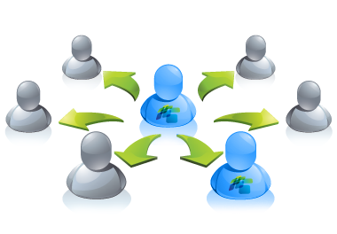

Waterfall Method
By: Cassiane Cladis and Elizabeth Lor
CSCI 5828 - Presentation 1
Index
- History of Waterfall Model
- Features of Waterfall Model
- Phases of Waterfall Model
- Description of Each Phase
- Advantages
- Disadvantages
- Example of Waterfall Model
- Importance to Software Engineering
- Additional Materials/Fun Facts
History of Waterfall Model
- Winston W. Royce 1970 article, "Managing the Development of Large Software Systems" introduced the description of the waterfall model.
- The article contained many of his personal views on software development.
- Royce did not use the term "waterfall" in the article.
- Royce presented the model as an example of a flawed, non-working model.
Why Flawed Model?
- Illustrates the software development in a linear sequential flow.
- One phase acts as the input for the next phase sequentially.
- Any phase in the development process begins only if the previous phase is complete.
- The phases do not overlap
- Therefore it is difficult to go back to phases and change flaws.
- Royce believed that a successful model should have the allowance to repetition or go back and forth between phases.
Why It Is Still Used
- Scientific articles that discuss the Waterfall model all cite Royce's article
- Articles often use phrasing like: "The waterfall is a proven method (Royce, 1970)"
- Unfortunately this is how science works
- Reserchers cite based on "buzz" or popularity from other researchers
- They don't read the publications but go off of second-hand research
- Nonetheless, the Waterfall method was widely used in Software Engineering and is still used today though often in modified models
Waterfall Model

Definition
The waterfall model is:
"A sequential design process, used in software development process, in which progress is seen as flowing steadily downwards (like a waterfall) through the phases of conception, initiation, analysis, design, construction, testing, production/implementation and maintenance"
Features of Waterfall Model
- It is simple to understand and use.
- It can be implemented for projects of varying size and scope.
- Each stage has to be done separately and sequentially.
- Each stage must be completed before the next phase can begin.
- The phases do not overlap.
- Documentation is produced at every stage allowing people to understand what has been done.
- Testing is done at every stage.
Phases of Waterfall Model
The waterfall model has 6 different phases:
- Requirement Gathering and Analysis
- Design
- Coding (Implementation)
- Testing
- Deployment
- Maintenance
Phase 1: Requirement Gathering and Anlaysis
Phase 1: Requirement Gathering and Analysis
- This phase includes a meeting with the customer to understand the user requirements and creating a product requirements document (Requirements Understanding Document)
- Research Conducted:
- Brainstorm and walkthrough to better understand the requirements
- Requirements feasibility test
- What is the software goiog to be
- Purpose it will fullfill
Phase 1: Con't
- This is the most crucial phase as any misinterpretation at this stage may give rise to validation issues later.
- The software definition must be detailed and accurate with no ambiguities.
- It is very important to understand the customer requirements and exprectations so that the end product meet his/her specifications.
- The basic requirements of the system must be understoond by software engineer.
- All requirements are well documented and discuessed further with the customer for reviewing.
Phase 2: System Design

Phase 2: System Design
- Requirement specifications from Phase 1 are studied.
- Customer requirements are broken down into logical modules.
- Helps in specifying hardware and system requirements
- Helps in defining overall system architecture
- Relationship between the various logical modules are established.
- Algorithms, diagrams, and functions are decided/developed
- Engineering units are placed (i.e. modules, programs, etc)
Phase 2: Con't
- Requirements are translated so coding can be done effectively and efficiently.
- Designing needs to be documented for further use.
- This phase lays a fundamental for actual programming and implementation.
- Create High Level Design Document (HLD) and Low Level Design Document (LLD)
Phase 3: Implementation
Phase 3: Implementation
- With inputs from Phase 2, the system is first developed in units.
- Software is divided into small modules for coding rather than coding the whole software.
- Source code is written.
- Design is translated into machine readable format.
- Programs are created in this phase.
- Unit Testing: Each unit is developed and tested for its functionality.
Phase 4: Testing
Phase 4: Testing
- Units developed in the Phase 3 are integrated into a system after testing each individual unit.
- Ensure error-free by testing and fully meeting the requirements outlined in Phase 1.
- Post integration the entire system is tested for any faults and failures.
- Tesing is done in two parts:
- Hardware
- Software
Phase 4: Con't
- Whole design and its construction is put under a test to check its functionality.
- Any errors will surface at this point of the process
- Materials produced in this phase:
- Test cases
- Test reports
- Defect reports
- Updated matrices
Phase 5: Deployment
Phase 5: Deployment
- Once the functional and non functional testing is done, the product is deployed in the customer environment or released into the market.
- In order to deploy the system the engineers need to make sure:
- Deploy the application in the respective environment.
- That there are no severe defects open.
- Make sure that the test exit criteria are met.
- Perform a sanity check in the environment after the application is deployed to ensure the application does not break.
- The User Manual is also produced at this time.
Phase 6: Maintenance
Phase 6: Maintenance
- Software development team undertake routine maintenace activities by visting the client site.
- If enhancements or changes are needed, the software process has to be followed all over again.
- How issues can be fixed
- Patches are released to fix issues
- Better versions are released to enhace the product
Phase 6: Con't
- This is usually the longest stage of the software.
- Software is updated to:
- Meet the changing customer needs
- Adapted to accommodate changes in the external environment
- Correct errors
- Enhance the efficiency of the software
Advantages of Waterfall
- Easy to understand and use.
- Allows for departmentalization and control.
- The fulfillment of one phase is needed before proceeding to the next.
- Each phase has specific deliverables and review process.
- Design errors are captured before any software is written, saving time during the implementation phase.
Advantages Con't
- Each phase of development proceeds in a strict order.
- Phases are processed and completed one at a time.
- Works well for smaller projects where requirements, budget and scope are very well understood.
- Easy to arrange tasks.
- Process and results are well documented.
Disadvantages of Waterfall
- Requirement analysis is done initially.
- Sometimes it is not possible to state all the requirement at the beginning.
- There are high amounts of risk and uncertainty.
- Customer can see working model only at the end.
- Poor model for long, ongoing projects where there is no set timeline.
Disadvantages Con't
- Not possible to backtrack since the phases flow from one to another.
- Does not allow much for reflection or revision.
- Once in the testing phase, it is very difficult to go back and change something.
- Not a good model for complex projects.
- Not good for project where requirements are at high risk of changing.
Example of Waterfall Model Used:
Product Development – Developing a Customer Address Book
Product Requirements
- Product manager creates requirement documents that include the following requirements (in order of priority).
- User should be able to create new contacts.
- User should be able to view their contacts.
- User should be able to import contacts from other programs.
- User should be able to email their contacts from the address book.
- User should be able to add pictures to represent their contacts.
Product Requirements Con't
- These requirement documents will include details requirements, user scenarios and potential layouts for the functionality.
- Timeframe: 2 weeks
Analysis
- Engineering team takes these requirements and analyzes them, asking questions as needed.
- Product manager updates the documents as questions are resolved.
- Timeframe: 1 week
Design
- Engineering team creates a design for functionality, including database design, mock-ups and workflows
- Timeframe: 3 weeks
Implementation
- Engineering team develps functionality and prepares it for testing
- Timeframe: 1 week
Software Product Testing
- Product team tests the entire functionality.
- Timeframe: 2 weeks
Deployment
- Team delivers the product to the client
- Timeframe: 1 week
Maintenance
- Product team checks in with client, makes appropriate and necessary changes and fixes, and helps keep the program running
- Timeframe: Indefinite
- Note: If any changes to the design occurs during this workflow, the project would have to return to the second or third phase and restart the process.
Importance to Software Engineering
- The waterfall method offers numberous advantages for software developers.
- Staged development cycle enforces discipline.
- Progress can be identified by the developer and client.
- Emphasis on requirements and design before coding.
- Ensure minimal wastage of time and effort.
- Reduce risk of customer expectations not being met.
- Can catch and correct flaws at the design stage rather at the testing stage.
Additional Materials
- Dr. Winston Royce original paper on the waterfall method
- New models has been created by modifying the waterfall model
- Sashimi Model
- Aorta Lifecycle Model
- V Waterfall Model
Fun Fact: Sashimi Model
Sashimi Model
- The sashimi model was originated by Peter DeGrace.
- It got its name because it features overlapping phases, like the overlapping fish of Japanese sashimi
Sashimi Model Con't
- Sometimes it is referred to as "the waterfall model with feedback."
Sashimi Model Con't
- Similar to the waterfall, except that the phases overlap to show that requirements cannot be completed until the architecture is at least partially explored.
- One can return to the previous step if desired.
- Another important feature of the sashimi model is the different treatment of the documentation.
- The model treats the documentation as unified documents
- This results in a significant reduction in the documentation volume.
Citations
- "Waterfall Model." Wikipedia. Wikimedia Foundation. Web. 24 Sept. 2015.
- "SDLC - Waterfall Model." Www.tutorialspoint.com. Web. 24 Sept. 2015.
- "Reflections on the Waterfall Method of Software Development." CabForward. 5 June 2014. Web. 24 Sept. 2015.
- Melonfire, Contributor. "Understanding the Pros and Cons of the Waterfall Model of Software Development." TechRepublic. Web. 24 Sept. 2015.
Citations Con't
- "Product Development: The Waterfall Methodology (model) in Software Development." MaRS. 6 Dec. 2009. Web. 24 Sept. 2015.
- Tikkanen, Tarmo. "Don't Draw Diagrams of Wrong Practices – Or: Why People Still Believe in the Waterfall Model." Tarmofi. 9 Sept. 2005. Web. 24 Sept. 2015.
- Melonfire, Contributor. "Understanding the Pros and Cons of the Waterfall Model of Software Development." TechRepublic. 22 Sept. 2006. Web. 24 Sept. 2015.